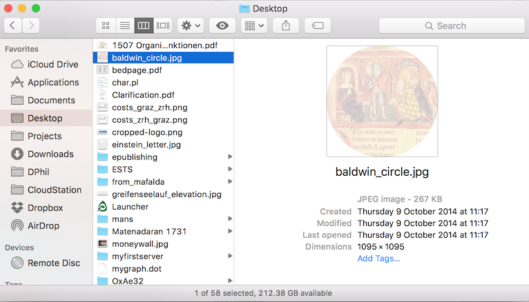
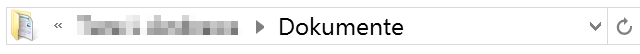

Goals:
The knowledge of “command line” opens a whole new world of opportunities, as the number of interface-less programs and applications is significantly larger; command line also offers a more robust and direct controls over a computer. The main goal is to learn the basics of this indispensable tool.
Software:
- [Mac] Terminal (installed)
- [Win] Powershell (should be installed)
- [optional]
python(install from: https://www.python.org/) - [optional]
r(install from: https://www.r-project.org/)
Class: Files, programs, and the command line
This is a primer to get you started on a few concepts:
- What a filesystem is
- How to run a program from the command line
- What it means to run a program
- How the computer knows what program to run
- How to refer to a file from the command line
The filesystem
All the files and programs on your computer are organized into folders; all these folders are in some other folders all the way down to your hard drive, which we call the root of your filesystem. Every hard drive, USB drive, DVD, and CD-ROM has its own filesystem.
You normally look at the contents of your filesystem via the Finder (on Mac) or the Explorer (on Windows). Open a window there now.
The Finder / Explorer window opens in some folder, which might be different depending on what computer operating system you’re using. But you’ll usually have a navigation bar to the left, that will let you go to different places. You see folders, also known as directories, and you might see files too.
One thing that computer OSes like to hide from you is the fact that you have a home directory, where all your personal files and folders should live. This makes it easier for multiple users to use a single computer. You can find your home directory like this:
- On Mac, select
Go>Homein the menu.

- On Windows, click on
Local Drive (C:), then click onUsers, then click on your login name.

You’ll see that your home directory has several folders in it already, that were created automatically for you when you first made a user account.
Now how can you tell where you are, with respect to the root of your drive?
- On Mac, select
View>Show Path Barin the menu.

On Windows, look:

The Finder / Explorer will also show you where in your computer’s filesystem you are. This is called the path—it shows you the path you have to take from the root of your filesystem to the folder you are in.
Now if you are on Windows, click on that bar and you’ll see something surprising.

This is your real path. The C:\ is how Windows refers to the root of your filesystem. Also note that, even if your OS is not in English, the path may very well be!
Getting started with the command line
Now that you have a hint of what is going on behind the scenes on your computer, let’s dive into the command line. Here is how you get there:
- On Mac, look for a program called
Terminal.app

- On Windows, look for a program called
Powershell

By default, these shells open in your home directory. On Windows this is easy to see, but on Mac it is less clear—that is, until you know that this ~ thing is an alias for your home directory.
Components of the command line
The command line consists of a prompt where you type your commands, the commands and arguments that you type, and the output that results from those commands.
The prompt is the thing that looks like (where user is your username):
MacBook-Pro:~ user$
or
PS C:\Users\user>
You will never need to type the prompt. That means that, if you are noting down what we do in class for future reference, you should not copy this part!
The prompt actually gives you a little bit of information.
- On Mac, it has the name of the computer, followed by a
:, followed by the directory where you are, followed by your username, with$at the end. - On Windows, it has
PSforPowerShell, followed by the name of the drive (Cfor most of you), followed by a:, followed by the full path to where you are, with>at the end.
When you type a command, nothing happens until you press the Return/Enter key. Some commands have output (more text that appears after you press Return/Enter) and others don’t. You cannot run another command until the prompt is given again.
NOTE: From this point on, you will be running the commands that are run here!
Let’s first make sure we are in our home directory by typing cd ~. For most of you this should change nothing, but now you know your first shell command. The cd stands for change directory, and what follows is the directory you want to go to.
cd ~
Now let’s have a look around. The command to show what is in any particular directory is called ls, which stands for list. Try running it.
ls
If you are on Windows, what you get will look more like this:
PS C:\Users\user> ls
You should then see something like:
Verzeichnis: C:\Users\user
Mode LastWriteTime Length Name
---- ------------- ------ ----
d---- 23.02.2016 21:18 .oracle_jre_usage
d-r-- 23.02.2016 20:40 Contacts
d-r-- 23.02.2016 20:40 Desktop
d-r-- 23.02.2016 21:11 Documents
d-r-- 23.02.2016 21:16 Downloads
d---- 23.02.2016 21:24 exist
d-r-- 23.02.2016 20:40 Favorites
d-r-- 23.02.2016 20:40 Links
d-r-- 23.02.2016 20:40 Music
d-r-- 23.02.2016 20:40 Pictures
d-r-- 23.02.2016 20:40 Saved Games
d-r-- 23.02.2016 20:40 Searches
d-r-- 23.02.2016 20:40 Videos
PS C:\Users\user>
Now go into your documents folder and look around.
cd Documents
ls
How does this compare to what you see in the Finder / Explorer window, if you click on the Documents folder?
Another important command, which tells you where you are at any given time, is pwd. This means print working directory. Try it now and see what you get.
pwd
If ever you get lost on the command line, pwd will always help you find your way.
File paths and path notations
By now you will have noticed that I’ve mentioned the path a few times, and that it seems to have something to do with this thing that pwd prints out. (And, most annoyingly, that it looks different on Mac and Windows) The bit of text that you get from pwd is what is called path notation, and it is very important that you learn it if you want to do anything with your own digital data. Here are some rules:
- The
/(or\\on Windows) separates folder names. SoDesktop/Videomeans “the thing called Video inside the Desktop folder”. - The
/all by itself refers to the base of your hard drive (usuallyMacintosh HDorC:\.) - The
~refers to your home folder. - These things can be combined;
~/Documentsmeans “the Documents folder in my home folder.” - The
.means “the current working directory”, i.e. what you would get if you ran the commandpwd. - The
..means “one directory back”—ifpwdgives you/Users/user, then..means/Users. - If the path does not start with a
.or a/or a~, then it will be assumed to start with a./, that is, “start from the current working directory.”
Let’s wander around a bit. Before that download the zip file with the materials of the course: https://github.com/maximromanov/tnt_wien_spring2018/archive/master.zip. Unzip it somewhere and go to that folder in your Terminal or Powershell.
cd /path/to/the/folder/tnt_wien_spring2018
pwd
cd ./cd 02_CommandLine/
pwd
ls
Try the following if you are on Mac
ls -lh
cd ..
pwd
NB: you can use TAB to autocomplete the path: type ls to see what folders are in Documents, then go to any one of them by typing cd (space) and then the first two letters > after that use TAB and the name will be complete automatically.
cd 05[TAB]
pwd
cd ../01[TAB]
pwd
ls McCarty_Modeling.pdf
cd ..
Command line arguments
So far we have learned three commands: cd, ls, and pwd. These are useful for navigation, but we can run a lot more commands once we learn them, and have a need for them!
What are we doing, exactly?
- First word is the
command - All other words are the
arguments - Words must be separated by
spaces
cd is a command that expects an argument: the name of the directory you want to go to. But what if the name has a space in it?
NB: You may think of most commands as sentences with subject, predicate, and object (or multiple objects).
cd ./01_Zotero_Word/Green Eggs and Ham
What happened there?
Well, we have a folder called Green Eggs and Ham in our example, and we tried to go there. But since the command line works with arguments, and since arguments are separated by space, the machine interpreted this as if we were saying “Change to the ./01_Zotero_Word/Green folder, and then Eggs, and, Ham, whatever that means.” And it gave us an error, because we don’t have a folder called Green in our example.
You can get around this. How you get around it depends on whether you’re on Windows or not. One way to get around it that should work both places is like this:
On Windows:
cd './01_Zotero_Word/Green Eggs and Ham'
On Mac (you need to escape spaces by adding a backslash in front of them):
cd ./01_Zotero_Word/Green\ Eggs\ and\ Ham/
NB: The easiest solution is to use TAB for autocomplete!
More stuff
With command line you can do everything that you became accustomed to be doing in a graphical interface of your favorite file manager. For example, you can copy, move, and delete files and folders
You can use:
mvto move filesrm(on Windows also:del) to delete filescpto copy files
In all cases you need to state which files you want to mv, rm, or cp. In some cases you also need to point where you want to mv or cp your files.
NB: Syntax on Mac and Windows will vary slightly, but if you keep using [TAB] for autocompletion, there will be no different in the process of typing the command, so let’s try to do it this way.
To start, let’s go to the root directory of our course materials (/tnt_wien_spring2018/). From there, let’s do the following:
cd 01[TAB]
ls
cp Mc[TAB] Green[TAB]
cd Green[TAB]
ls
NB: when you hit [TAB] after Mc you are not going to get the full autocomplete, because there are two files that start with McCarty_Modeling—one is pdf and another—txt. You will need to type one more letter p and then hit [TAB] again to get the file name that you need. Thus, the command can be transcribed as: M[TAB]p[TAB]
Now let’s rm (delete) the McCarty_Modeling.pdf from this folder, then go to the folder where we copied it, and then mv (move) it back to where it was in the first place.
rm M[TAB]p[TAB]
ls
cd G[TAB]
mv Mc[TAB] ../
cd ..
ls
Tada! The McCarty_Modeling.pdf should now be back where it was.
Learning more
If you want to learn about new commands, try to Google that. Googling things like this is a very big part of being a DH scholar! You will most likely find your answers on https://stackoverflow.com/, which will become your most frequented resource, if you embark on the DH path.
Homework
- Work through a reference material on command line which is relevant to your operating system.
- Register at Codecademy.com (https://www.codecademy.com), if you haven not already.
- Complete Codecademy’s Learn the Command Line, Units 1-4 (free sections)
- Email the screenshot with confirmation of completion.